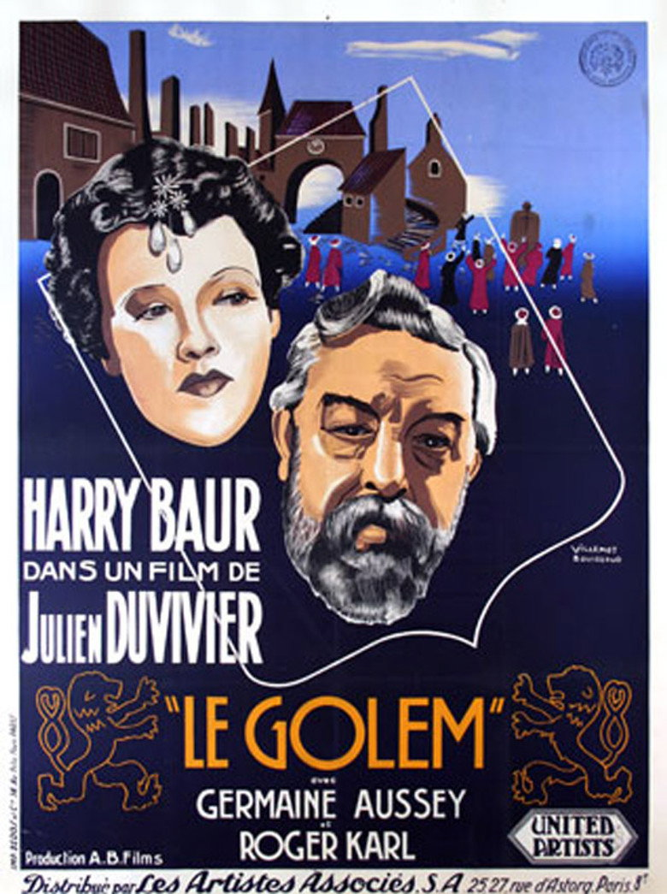

Fiche technique

Synopsis
Prague, sous le règne de Rodolphe II. Le rabbin Loew est mort, et avec lui le secret qui animait le Golem — la créature d'argile qu'il avait façonnée pour protéger les siens dort désormais dans un grenier, colosse inerte que l'empereur, superstitieux et terrifié, a fait transporter dans son palais. Dans le ghetto, l'oppression s'aggrave : le chancelier Lang, juif renégat rallié au pouvoir, orchestre rafles et brimades pendant que Rodolphe s'enfonce dans la débauche et la folie[1].
Le jeune rabbin Jacob, dépositaire supposé du secret, est arrêté et torturé ; sa femme Rachel prendra le relais. Quand la révolte du ghetto gronde et que les cachots se remplissent, la formule retrouvée réveille enfin la créature — et le film bascule dans le cataclysme : le Golem brise ses chaînes, les murs du palais, et le règne de la terreur avec eux[1][2].
Contexte de production
L'histoire de production est aussi singulière que le film : Duvivier — alors au sommet de sa première gloire française — part tourner aux studios Barrandov de Prague une coproduction franco-tchécoslovaque en langue française, adaptée non du roman de Meyrink mais d'une pièce de 1931 des Tchèques Jiří Voskovec et Jan Werich[1]. L'équipe mêle les écoles : photographie des Tchèques Jan Stallich et Václav Vích, décors d'André Andrejew — le grand décorateur venu de l'expressionnisme allemand — et vedettes françaises, Harry Baur en tête[1].
Le film se conçoit ouvertement comme une suite au Golem de Paul Wegener (1920) : il se situe après les événements du classique expressionniste, Loew mort, la créature remisée[2]. Mais le vrai contexte est ailleurs, et personne en 1936 ne pouvait le manquer : trois ans après l'arrivée de Hitler au pouvoir, un cinéaste français filme à Prague l'histoire d'un pouvoir qui persécute les Juifs — « le mythe universel du Golem redevient d'une triste actualité au milieu des années trente, alors que le nazisme fomente l'éradication du peuple juif »[2]. Le fantastique comme éditorial : peu de films d'époque furent aussi frontalement contemporains.
Structure narrative
La construction est celle d'une attente organisée : le Golem, présent dès le titre et dans toutes les conversations, reste invisible ou inerte pendant l'essentiel du récit — statue voilée dans le palais, rumeur dans le ghetto, cauchemar dans les nuits de l'empereur. Duvivier construit son film comme une cocotte-minute : intrigues de cour, martyre du ghetto, torture de Jacob, révolte qui monte — et ne libère sa créature que dans le dernier mouvement, pour un finale de destruction pure[2].
Cette rétention a un coût que la critique n'a jamais cessé de discuter — une longue première heure « bavarde » d'intrigues palatiales avant l'embrasement[3] — mais elle a un sens : dans cette version, le monstre n'est pas le sujet, il est le verdict. Le film raconte moins le réveil d'une créature que la lente fabrication des conditions qui le rendent inévitable — l'oppression comme compte à rebours.
Mise en scène et procédés techniques
Visuellement, le film est un carrefour d'Europe : Duvivier y rend « hommage au cinéma expressionniste allemand et aux films de monstres des studios Universal »[2] — escaliers démesurés d'Andrejew, ombres portées, géométries écrasantes du palais contre le lacis organique du ghetto. La créature elle-même est traitée en apparition : « filmée en contre-plongée, mise en lumière par un éclairage extrêmement dramatique »[2], elle bénéficie d'une des révélations les plus patiemment préparées du fantastique d'avant-guerre.
La caméra de Stallich et Vích — mobile, fluide, très en avance sur le tout-venant français de 1936 — travaille les foules du ghetto en frises quasi documentaires, et le finale déchaîne des moyens rares : murs qui s'effondrent, lion lâché, palais en déroute — la « chronique historique » virant au « cinéma catastrophe »[2]. Graham Greene, en 1937, avait trouvé la formule de cette étrangeté : un film « qui vaut tout à fait le détour, comme une survivance — une survivance sémitique — du vieux cinéma romantique de Caligari »[3].
Personnages principaux
Le film appartient à Harry Baur, Rodolphe II « débauché et psychopathe », « flamboyant, crevant l'écran avec emphase »[2] : empereur alchimiste terrifié par la créature qu'il séquestre, tyran infantile qui consulte les astres et fait torturer les innocents — Baur en fait un monstre plus inquiétant que le monstre, et Greene salua là « l'une de ses interprétations les plus brillantes »[3]. Tragique ironie d'acteur : Harry Baur mourra en 1943, peu après avoir été arrêté et torturé par la Gestapo — l'Histoire rattrapant atrocement la fable qu'il avait servie.
Face à lui, Lang (Roger Karl), le chancelier juif converti devenu persécuteur des siens — figure du collaborateur d'une actualité glaçante ; le jeune rabbin Jacob (Charles Dorat) et sa femme Rachel, qui accomplit le geste final — détail remarquable : c'est une femme qui réveille le sauveur ; et le Golem (Ferdinand Hart), présence minérale dont l'inexpressivité même est le rôle : il n'est pas un personnage, il est une réponse[1][2].
Thèmes
Le thème central est l'oppression et le droit à la résistance : le film pose, en termes à peine voilés, la question de 1936 — que peut un peuple persécuté quand la légalité elle-même persécute ? Sa réponse est la légende : la force surgit de la mémoire (le secret transmis), de la foi, et du refus. La critique moderne y lit explicitement « un appel à la résistance contre l'oppression subie par les Juifs d'Europe »[2] — ce qui fait du film l'un des très rares gestes antinazis du cinéma français d'avant-guerre.
S'y ajoutent la figure du renégat — Lang, plus zélé que ses maîtres, anatomie du collaborateur avant la lettre — et le thème du pouvoir dévoré par sa propre peur : Rodolphe garde le Golem enchaîné dans son palais comme on garde sa mauvaise conscience, et c'est littéralement sa terreur qui finit par tout détruire. Enfin, la matière même de la légende : l'argile animée par la lettre — אמת, « vérité », inscrite au front de la créature — dit que la force des opprimés naît du verbe et du livre ; dans l'Europe des autodafés, l'image n'avait rien d'innocent.
Réception critique et postérité
À sa sortie en février 1936, le film déconcerte : trop fantastique pour les habitués du Duvivier réaliste — l'homme de La Bandera et bientôt de Pépé le Moko —, trop politique pour le simple divertissement. La réception est restée durablement partagée : d'un côté l'admiration pour l'ampleur plastique et pour Baur, de l'autre le reproche récurrent d'une intrigue « bavarde » qui fait attendre son monstre[3]. Greene, lui, avait choisi son camp :
« Tout à fait digne d'être vu, comme une survivance — une survivance sémitique — du vieux cinéma romantique de Caligari. » Graham Greene, 1937, cité via la recherche documentaire[3]
La postérité l'a réévalué en pièce unique : unique dans l'œuvre de Duvivier — son seul vrai film fantastique[3] —, unique dans le cinéma français des années trente par son sujet, et unique comme document : un film antinazi tourné à Barrandov, studios que la Wehrmacht occuperait trois ans plus tard. Sa redécouverte moderne (restaurations, programmations au Musée d'art et d'histoire du judaïsme notamment) l'a réinstallé à sa place : entre Wegener et les golems à venir, le chaînon français de la légende[1][2].
Conclusion
Le Golem de Duvivier est un film-frontière : entre la France et la Mitteleuropa, entre l'expressionnisme finissant et le cinéma de studio des années trente, entre la légende et l'éditorial. Ses défauts de rythme sont réels et personne n'a jamais prétendu le contraire ; mais on ne lit pas ce film comme un simple film de monstre — on le lit comme une lettre envoyée de 1936, dont chaque image sait ce qui vient et l'affronte avec les seuls moyens du mythe.
Selon la légende, il suffit d'effacer une lettre du mot אמת (« vérité ») sur le front du Golem pour qu'il ne reste que מת — « mort » — et que la créature retombe en poussière. Le film de Duvivier est construit sur cette équation : quand un pouvoir efface la vérité, il ne reste que la mort, et l'argile se lève. Que cette leçon ait été tournée à Prague, en français, par le futur réalisateur de Pépé le Moko, trois ans avant la catastrophe, en fait bien plus qu'une curiosité : un des rares moments où le cinéma européen a regardé son époque dans les yeux — à travers ceux, immenses et vides, d'un géant d'argile.
Sources
- Wikipédia (fr) — « Le Golem (film, 1936) » : fiche technique (Duvivier/Antoine, Stallich/Vích, Andrejew, AB Film/Barrandov), distribution, sortie du 6 février 1936, synopsis. fr.wikipedia.org
- Films Fantastiques — « Le Golem (1936) » : rapport au film de Wegener (suite), hommage à l'expressionnisme et à Universal, révélation de la créature, Harry Baur « flamboyant », lecture politique (actualité du mythe face au nazisme, appel à la résistance), chronique historique virant au cinéma catastrophe. filmsfantastiques.com
- Critiques anglophones consultées via recherche web (frenchfilms.org, Mark David Welsh, citations de Graham Greene 1937) : place unique dans l'œuvre de Duvivier, réserves sur le rythme, éloge de Baur, formule « survivance sémitique du cinéma de Caligari ». frenchfilms.org
- The Movie Database (TMDB) — fiche du film (données factuelles, affiche). themoviedb.org/movie/169479